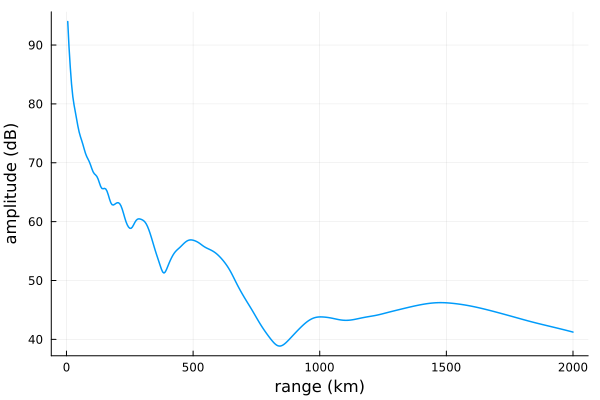
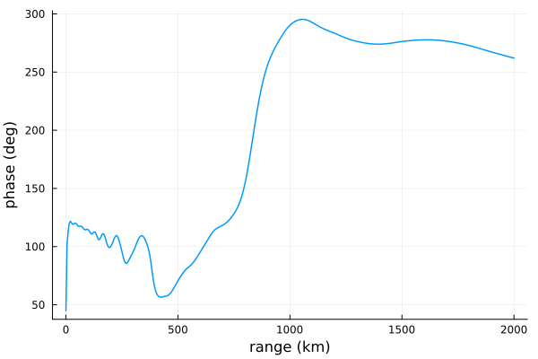
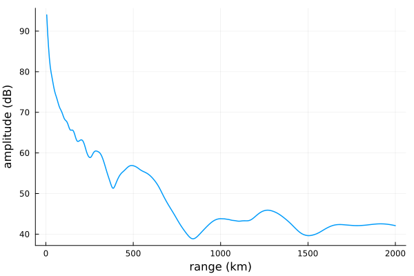
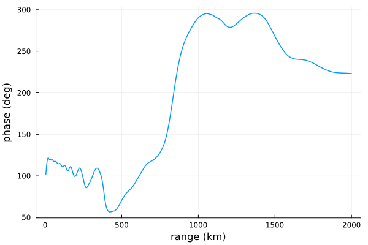

Introduction to defining scenarios
This example walks through the basic usage of LongwaveModePropagator when interfacing with the package through Julia.
The simplest way to propagate a transmitted signal in the Earth-ionosphere waveguide is to use the primary function exported by LongwaveModePropagator:
propagate(waveguide, tx, rx)
where waveguide defines the characteristics of the Earth-ionosphere waveguide, tx ("transmitter") describes the radiofrequency emitter, and rx ("receiver") describes how the electromagnetic field is sampled in the waveguide.
LongwaveModePropagator exports several structs which are used to define propagation scenarios. We'll break them into two major categories of Transmitters and receivers and Waveguides.
Let's load the necessary packages.
using Plots
using LongwaveModePropagator
using LongwaveModePropagator: QE, METransmitters and receivers
This section discusses transmitters and receivers (or emitters and samplers) and the related types.
We'll begin by looking at the related types that Emitters and Samplers rely on.
Frequencies
Throughout the code, the electromagnetic wave frequency is required in different forms: as a temporal frequency, angular frequency, or a wave number or wavelength. These are always defined in vacuum.
For consistency and convenience, LongwaveModePropagator defines a Frequency struct containing fields for:
- frequency
fin Hertz - angular frequency
ωin radians/sec - wavenumber
kin radians/meter - wavelength
λin meters
These fields are automatically calculated when passed a temporal frequency.
frequency = Frequency(20e3)Frequency(20000.0, 125663.70614359173, 0.00041916900439033635, 14989.6229)Antennas
LongwaveModePropagator computes the far field in the waveguide produced from energized small dipole antennas of any orientation.
All antennas are subtypes of the abstract LongwaveModePropagator.Antenna type. Currently all antennas are also subtypes of the LongwaveModePropagator.AbstractDipole type.
The most general antenna is the Dipole, which has azimuth_angle and inclination_angle fields to describe its orientation with respect to the waveguide.
az = π/4
inc = π/8
d = Dipole(az, inc)Dipole(0.7853981633974483, 0.39269908169872414)There are also two special cases of Dipole: VerticalDipole and HorizontalDipole. The VerticalDipole struct has no fields. For our purposes, it is fully defined by name alone.
vd = VerticalDipole()
inclination(vd)0.0The HorizontalDipole struct has the azimuth_angle field (in radians) to describe its orientation relative to the waveguide.
hd = HorizontalDipole(az)
rad2deg(inclination(hd))90.0rad2deg(azimuth(hd))45.0Additional help can be found by typing ? HorizontalDipole in the REPL.
Why bother defining these types? We make use of multiple dispatch to avoid calculating field terms that are unnecessary for special cases of emitter orientation.
Emitters
Emitters emit radiofrequency energy in the waveguide. These are typically large, fixed VLF transmitters on the ground, but they could also be airborne. The type hierarchy in LongwaveModePropagator was designed with the thought that this could potentially be expanded to include natural emitters like lightning, although there is no internal functionality to directly handle such an emitter at this time.
All emitters subtype the abstract LongwaveModePropagator.Emitter type.
The Transmitter struct is used to define a typical man-made transmitter on the ground. A Transmitter has the fields
name::String: transmitter name.latitude::Float64: transmitter geographic latitude in degrees.longitude::Float64: transmitter geographic longitude in degrees.antenna::Antenna: transmitter antenna.frequency::Frequency: transmit frequency.power::Float64: transmit power in Watts.
Note that currently latitude and longitude are not used. Distances are measured relative to the Emitter without reference to absolute positions.
Several convenience constructors exist to create Transmitters with particular defaults for the remaining fields.
name = "NAA"
lat = 44.6464
lon = -67.2811
f = 24e3
tx = Transmitter(name, lat, lon, f)Transmitter{VerticalDipole}("NAA", 44.6464, -67.2811, VerticalDipole(), Frequency(24000.0, 150796.44737231007, 0.0005030028052684036, 12491.352416666667), 1000.0)For the common case of transmitters on the ground with antennas modeled as a VerticalDipole, simply specify the transmit frequency.
tx = Transmitter(f)Transmitter{VerticalDipole}("", 0.0, 0.0, VerticalDipole(), Frequency(24000.0, 150796.44737231007, 0.0005030028052684036, 12491.352416666667), 1000.0)Alternately an Antenna, frequency, and power level can be specified.
power = 500e3 # 500 kW
tx = Transmitter(hd, f, power)Transmitter{HorizontalDipole}("", 0.0, 0.0, HorizontalDipole(0.7853981633974483), Frequency(24000.0, 150796.44737231007, 0.0005030028052684036, 12491.352416666667), 500000.0)Although not currently exported by LongwaveModePropagator, there is an LongwaveModePropagator.AirborneTransmitter defined that adds an altitude field to the basic Transmitter object. Further implementation and verification of the radiation resistance of an elevated antenna is required for accurate scaling of the electric field magnitude in the waveguide. In the meantime, if relative amplitude is sufficient, the height gain functions of an elevated transmitter are already incorporated into the model.
Samplers
Structs that subtype LongwaveModePropagator.AbstractSampler probe the fields in the waveguide generated by an emitter. In common to all subtypes of AbstractSampler is that they have a position in the guide and specify what field component they sample.
Fields is a baremodule contained within and reexported from LongwaveModePropagator.jl which contains a single enum object
Fields.FieldEnum LongwaveModePropagator.Fields.Field:
Ex = 0
Ey = 1
Ez = 2Individual fields are specified with
field = Fields.EzEz::Field = 2The general Sampler type specifies
distance::T: ground distance from the transmitter in meters.fieldcomponent::Fields.Field: field component measured by theSampler.altitude::Float64: height above the ground in meters.
The distance field is parameterized and therefore could be a single distance e.g. 2250e3, a vector of distances [2000e3, 2100e3, 2500e3], or a range 0:5e3:2000e3, for example.
There is a special GroundSampler which lacks the altitude field in Samplers because it is known from the type that altitude = 0.
distance = 2000e3
rx = GroundSampler(distance, field)GroundSampler{Float64}(2.0e6, LongwaveModePropagator.Fields.Ez)Finally there is a Receiver struct which is defined with a geographic location and Antenna, but it is not exported because geographic information is not currently handled by the package.
Waveguides
The abstract LongwaveModePropagator.Waveguide type is used to describe the earth-ionosphere waveguide with a BField, Species, and Ground.
The basic concrete waveguide type is a HomogeneousWaveguide, with fields
bfield::BField: background magnetic field.species::S: ionosphere constituents.ground::Ground: waveguide ground.distance::Float64: distance from theEmitterat the start of the segment in meters.
If not specified, distance is 0. The form of the function call is
HomogeneousWaveguide(bfield, species, ground)
HomogeneousWaveguide should be used when modeling with only a single homogeneous waveguide (ground, ionosphere, and magnetic field) along the propagation path.
To model an inhomogeneous propagation path, there is a SegmentedWaveguide type. The SegmentedWaveguide is simply a wrapper for a Vector of waveguides.
Let's look at the components of a waveguide.
BField
The BField type describes the magnitude and direction of the background magnetic field. Internally it consists of fields for the field strength B in Teslas and direction cosines corresponding to the directions parallel, perpendicular, and up into the waveguide.
A BField is most commonly constructed by specifying the field strength, dip angle in radians from the horizontal and positive when directed into Earth, and azimuth angle in radians from the propagation direction, positive towards $y$.
For example,
bfield = BField(50000e-9, π/2, 0)BField(5.0e-5, 6.123233995736766e-17, 0.0, -1.0)bfield is a vertical magnetic field of 50,000 nT.
Species
The Species struct identifies a constituent species of the ionosphere. Species contains the fields
charge::Float64: signed species charged in Coulombs.mass::Float64: species mass in kilograms.numberdensity::F: a callable that returns number density in number per cubic meter as a function of height in meters.collisionfrequency::G: a callable that returns the collision frequency in collisions per second as a function of height in meters.
numberdensity and collisionfrequency should be "callables" (usually Functions) that return the number density and collision frequency, respectively, as a function of height in meters.
For convenience, the Wait and Spies profile is accessible via waitprofile. Similarly the accompanying collision frequency profiles are electroncollisionfrequency and ioncollisionfrequency.
To define some electrons for the ionosphere (QE and ME were explicitly imported at the top of the example):
h = 75
β = 0.35
electrons = Species(QE, ME, z->waitprofile(z, h, β), electroncollisionfrequency)Species(-1.602176634e-19, 9.1093837015e-31, FunctionWrappers.FunctionWrapper{Float64, Tuple{Float64}}(Ptr{Nothing} @0x00007fc886981290, Ptr{Nothing} @0x00007fc8256c8070, Base.RefValue{Main.var"#1#2"}(Main.var"#1#2"()), Main.var"#1#2"), FunctionWrappers.FunctionWrapper{Float64, Tuple{Float64}}(Ptr{Nothing} @0x00007fc8869815e0, Ptr{Nothing} @0x00007fc8256c8078, Base.RefValue{typeof(electroncollisionfrequency)}(LongwaveModePropagator.electroncollisionfrequency), typeof(electroncollisionfrequency)))Note that we used a lambda function to specify the waitprofile with our given $h'$ and $\beta$. Also note that these two parameters are a rare instance of SI units not strictly being followed. See the help for waitprofile for more information, including optional height cutoff and density threshold arguments.
electroncollisionfrequency is a function of height z only, so it is not necessary to generate a lambda function. We can pass the function handle directly.
Ground
Ground describes the relative permittivity ϵᵣ and conductivity σ of Earth.
ground = Ground(10, 2e-4)Ground(10, 0.0002)For convenience, a dictionary of common ground indices is exported.
GROUNDDict{Int64, Ground} with 10 entries:
5 => Ground(15, 0.001)
4 => Ground(10, 0.0003)
6 => Ground(15, 0.003)
7 => Ground(15, 0.01)
2 => Ground(5, 3.0e-5)
10 => Ground(81, 4.0)
9 => Ground(15, 0.1)
8 => Ground(15, 0.03)
3 => Ground(10, 0.0001)
1 => Ground(5, 1.0e-5)Dicts aren't sorted, but simply specify the index as the key to access the Ground entry.
ground = GROUND[5]Ground(15, 0.001)Propagating the fields: HomogeneousWaveguide
We'll redefine everything we've defined above just so they're easier to see, run the model, and plot the results.
f = 24e3
tx = Transmitter(f)
ranges = 0:5e3:2000e3
field = Fields.Ez
rx = GroundSampler(ranges, field)
bfield = BField(50e-6, π/2, 0)
electrons = Species(QE, ME, z->waitprofile(z, 75, 0.35), electroncollisionfrequency)
ground = GROUND[5]
waveguide = HomogeneousWaveguide(bfield, electrons, ground)HomogeneousWaveguide{Species}(BField(5.0e-5, 6.123233995736766e-17, 0.0, -1.0), Species(-1.602176634e-19, 9.1093837015e-31, FunctionWrappers.FunctionWrapper{Float64, Tuple{Float64}}(Ptr{Nothing} @0x00007fc886987420, Ptr{Nothing} @0x00007fc8256c8068, Base.RefValue{Main.var"#3#4"}(Main.var"#3#4"()), Main.var"#3#4"), FunctionWrappers.FunctionWrapper{Float64, Tuple{Float64}}(Ptr{Nothing} @0x00007fc8869815e0, Ptr{Nothing} @0x00007fc8256c8080, Base.RefValue{typeof(electroncollisionfrequency)}(LongwaveModePropagator.electroncollisionfrequency), typeof(electroncollisionfrequency))), Ground(15, 0.001), 0.0)The propagate function returns a tuple of complex electric field, amplitude in dB μV/m, and phase in radians.
E, a, p = propagate(waveguide, tx, rx);Here are quick plots of the amplitude
plot(ranges/1000, a;
xlabel="range (km)", ylabel="amplitude (dB)",
linewidth=1.5, legend=false)
and phase.
plot(ranges/1000, rad2deg.(p);
xlabel="range (km)", ylabel="phase (deg)",
linewidth=1.5, legend=false)
Propagating the fields: SegmentedWaveguide
As previously mentioned, a SegmentedWaveguide contains a vector of HomogeneousWaveguides. There are many ways to construct a SegmentedWaveguide.
One common case is when a vector of BFields, Species, and/or Grounds are known for each HomogeneousWaveguide making up the SegmentedWaveguide. We'll also need to specify the distance at which each waveguide segment begins relative to the transmitter.
The first HomogeneousWaveguide should have a distance of 0. An error will eventually be thrown if that is not the case.
In this example we'll have two segments. The second segment begins 1000 km away from the transmitter.
distances = [0.0, 1000e3]
species = [Species(QE, ME, z->waitprofile(z, 75, 0.35), electroncollisionfrequency),
Species(QE, ME, z->waitprofile(z, 82, 0.5), electroncollisionfrequency)]
waveguide = SegmentedWaveguide([HomogeneousWaveguide(bfield, species[i], ground,
distances[i]) for i in 1:2]);We can propagate just as before
E, a, p = propagate(waveguide, tx, rx);Here are quick plots of the amplitude
plot(ranges/1000, a;
xlabel="range (km)", ylabel="amplitude (dB)",
linewidth=1.5, legend=false)
and phase.
plot(ranges/1000, rad2deg.(p);
xlabel="range (km)", ylabel="phase (deg)",
linewidth=1.5, legend=false)
Comparing to the plots for the HomogeneousWaveguide above, the results are the same for the first 1000 km and differ for the second 1000 km where there is a different ionosphere in the SegmentedWaveguide scenario.
LMPParams
Many functions within the LongwaveModePropagator package take an optional params argument LMPParams. LMPParams is a keyword-compatible struct defined with the @with_kw argument from the Parameters.jl package. An instance of LMPParams contains model parameters and switches used throughout the package.
The default values are obtained by invoking
LMPParams()LMPParams{OrdinaryDiffEq.Vern7{typeof(OrdinaryDiffEq.trivial_limiter!), typeof(OrdinaryDiffEq.trivial_limiter!), Static.False}, OrdinaryDiffEq.Tsit5{typeof(OrdinaryDiffEq.trivial_limiter!), typeof(OrdinaryDiffEq.trivial_limiter!), Static.False}, StepRangeLen{Float64, Base.TwicePrecision{Float64}, Base.TwicePrecision{Float64}, Int64}}
topheight: Float64 110000.0
earthradius: Float64 6.369e6
earthcurvature: Bool true
curvatureheight: Float64 50000.0
approxsusceptibility: Bool false
susceptibilitysplinestep: Float64 10.0
grpfparams: GRPFParams
integrationparams: IntegrationParams{OrdinaryDiffEq.Vern7{typeof(OrdinaryDiffEq.trivial_limiter!), typeof(OrdinaryDiffEq.trivial_limiter!), Static.False}}
wavefieldheights: StepRangeLen{Float64, Base.TwicePrecision{Float64}, Base.TwicePrecision{Float64}, Int64}
wavefieldintegrationparams: IntegrationParams{OrdinaryDiffEq.Tsit5{typeof(OrdinaryDiffEq.trivial_limiter!), typeof(OrdinaryDiffEq.trivial_limiter!), Static.False}}
radiationresistancecorrection: Bool false
A single value can be specified as a keyword argument while keeping all other values as their defaults
LMPParams(approxsusceptibility=true)LMPParams{OrdinaryDiffEq.Vern7{typeof(OrdinaryDiffEq.trivial_limiter!), typeof(OrdinaryDiffEq.trivial_limiter!), Static.False}, OrdinaryDiffEq.Tsit5{typeof(OrdinaryDiffEq.trivial_limiter!), typeof(OrdinaryDiffEq.trivial_limiter!), Static.False}, StepRangeLen{Float64, Base.TwicePrecision{Float64}, Base.TwicePrecision{Float64}, Int64}}
topheight: Float64 110000.0
earthradius: Float64 6.369e6
earthcurvature: Bool true
curvatureheight: Float64 50000.0
approxsusceptibility: Bool true
susceptibilitysplinestep: Float64 10.0
grpfparams: GRPFParams
integrationparams: IntegrationParams{OrdinaryDiffEq.Vern7{typeof(OrdinaryDiffEq.trivial_limiter!), typeof(OrdinaryDiffEq.trivial_limiter!), Static.False}}
wavefieldheights: StepRangeLen{Float64, Base.TwicePrecision{Float64}, Base.TwicePrecision{Float64}, Int64}
wavefieldintegrationparams: IntegrationParams{OrdinaryDiffEq.Tsit5{typeof(OrdinaryDiffEq.trivial_limiter!), typeof(OrdinaryDiffEq.trivial_limiter!), Static.False}}
radiationresistancecorrection: Bool false
An instance of LMPParams can be passed as the params argument of propagate or findmodes.
See the Parameters.jl README for other ways of interacting with LMPParams.
This page was generated using Literate.jl.